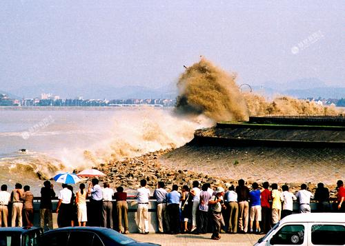

錢塘江

錢塘江，古稱浙，全名“浙江”，又名“折江”、“之江”、“羅刹江”，一般浙江富陽段稱為富春江，浙江下游杭州段稱為錢塘江 [1] 。錢塘江最早見名於《山海經》，因流經古錢塘縣（今杭州）而得名 [2] ，是吳越文化的主要發源地之一。
錢塘江是浙江省最大河流，是宋代兩浙路的命名來源，也是明初浙江省成立時的省名來源。以北源新安江起算，河長588.73千米；以南源衢江上游馬金溪起算，河長522.22千米。自源頭起，流經今安徽省南部和浙江省，流域面積55058平方公里 [3] ，經杭州灣注入東海。
錢塘江潮被譽為“天下第一潮”，是世界一大自然奇觀，它是天體引力和地球自轉的離心作用，加上杭州灣喇叭口的特殊地形所造成的特大湧潮。
錢塘江幹流各段隨地異名。從發源地始，為大源河。再然後，叫做率水。在屯溪，新安江上游一條重要的支流橫江流入了率水。從屯溪的率口往下，一直到浦口，這條河流稱為漸江。在浦口，漸江與新安江的二級支流練江交匯。在練江這一段當中，有幾條重要的三級支流匯入，分別是豐樂河、富資水、揚之水。練江在浦口與漸江交匯後，注入千島湖，一直往下流。然後，跌出大壩到達浙江境內，到了建德，先是叫做新安江，進入桐廬縣後名富春江。到了杭州聞家堰，這條河流又改叫錢塘江。之後匯入東海。
錢塘江主源出自休寧縣大尖山嶺北麓的板倉，往東北流貫浙江省北部，至澉浦經杭州灣入東海。澉浦以上河長約500公里，流域面積50100平方公里。流域來水豐沛，河流中含泥沙量小。根據潮區界蘆茨埠站資料統計，多年平均年徑流總量為291億立米，多年平均年輸沙量500萬噸。徑流係數穩定，天然徑流存在有11年和14年的准週期變化。有豐富的水能資源。 [7] 天然徑流的年內分配很不均勻，4、5、6月份梅汛期水量約占年總量的50%，最大洪峰流量達29000立米/秒（1955年）；枯季最小流量為15.4立米/秒（1934年）；7～9月為颱風雨季節，但產生較大洪水的機會不多。